2 Functions
This chapter documents the function-level modules in IOBRportal (stepwise, modular analysis).
2.1 Data Preparation
2.1.1 Counts to TPM
Convert raw gene-level read counts to TPM (Transcripts Per Million) with gene-length normalization and library-size scaling. Optional log2 transformation can be applied after TPM conversion.
Example input
TCGA-BR-6455 TCGA-BR-7196 TCGA-BR-8371 TCGA-BR-8380
ENSG00000000003 8006 2114 767 1556
ENSG00000000005 1 0 5 5
ENSG00000000419 3831 2600 1729 1760
ENSG00000000457 1126 745 1040 1260Parameters
- Organism (
org)- Human (
hsa) - Mouse (
mmus)
- Human (
- ID Type (
idType) — depends on the selected organism- Human: Ensembl / Entrez / Symbol
- Mouse: Ensembl / MGI / Symbol
- Source (
source) for gene-length annotationlocal: use built-in local annotation resourcesbiomart: retrieve annotation from Ensembl BioMart
- Log2
True: apply log2 transformation after TPM conversionFalse: keep TPM values on the original scale
Steps
- Upload a count matrix.
- Select the Organism.
- Select the appropriate ID Type.
- Choose the Source for gene-length annotation.
- Choose whether to apply Log2 transformation.
- Click Run Analysis.
Example output
TCGA-BR-6455 TCGA-BR-7196 TCGA-BR-8371 TCGA-BR-8380
MT-CO1 14.61531657 14.55416750 15.85331284 15.61442176
MT-ND4 13.82638047 13.86929727 15.55664588 14.97415153
MT-CO3 13.60573394 13.85689319 15.53842439 15.07683124
IGKC 13.27294092 16.26343514 9.480865354 12.09469208Download
- Results can be exported from the Download panel.
2.1.2 Annotate ExpressionSet
Annotate an expression matrix with gene symbols using built-in annotation resources. The module maps probe or gene identifiers to gene symbols, removes invalid entries, resolves duplicated genes, and optionally applies log2 transformation.
Example input
Sample_1 Sample_2 Sample_3 Sample_4
ENSG00000121410 12.5 10.8 14.2 13.1
ENSG00000175899 5.6 6.2 4.9 5.4
ENSG00000256069 0.0 0.3 0.1 0.0
ENSG00000111640 8.1 7.5 9.0 8.4Parameters
- Annotation (
annotation)RNA-seq (Human)→anno_grch38Affymetrix (Human)→anno_hug133plus2Illumina (Human)→anno_illuminaRNA-seq (Mouse)→anno_gc_vm32
- Method (
method) — used to summarize duplicated gene symbolsMeanSumSd
- Log2
True: apply log2 transformation after annotationFalse: keep values on the original scale
Steps
- Upload an expression matrix.
- Select the appropriate Annotation.
- Choose the Method for duplicated genes.
- Choose whether to apply Log2 transformation.
- Click Run Analysis.
Example output
Sample_1 Sample_2 Sample_3 Sample_4
MT-CO1 14.62 14.55 15.85 15.61
MT-ND4 13.83 13.87 15.56 14.97
IGKC 13.27 16.26 9.48 12.09
EPCAM 10.42 10.10 11.03 10.88Download
- Results can be exported from the Download panel.
2.1.3 Detect Outlier Samples
Identify outlier samples from an expression matrix and remove them from the dataset. The module displays the cleaned matrix, shows the detected outlier samples, and provides a diagnostic plot for quality assessment.
Example input
TCGA-BR-6455 TCGA-BR-7196 TCGA-BR-8371 TCGA-BR-8380
MT-CO1 14.62 14.55 15.85 15.61
MT-ND4 13.83 13.87 15.56 14.97
MT-CO3 13.61 13.86 15.54 15.08
IGKC 13.27 16.26 9.48 12.09Steps
- Upload an expression matrix.
- Click Run Analysis.
- View the cleaned expression matrix in the Data_clean tab.
- View the diagnostic plot in the Plot tab.
- Check the detected outlier samples in the Outliers tab.
Example output
TCGA-BR-6455 TCGA-BR-7196 TCGA-BR-8380
MT-CO1 14.62 14.55 15.61
MT-ND4 13.83 13.87 14.97
MT-CO3 13.61 13.86 15.08
IGKC 13.27 16.26 12.09Outliers
- Example:
TCGA-BR-8371
Download
- Cleaned data can be exported from the Download panel.
- The diagnostic plot can be exported from the Plot tab.
2.1.4 Remove Duplicate Genes
Aggregate duplicated gene symbols in an expression matrix using the selected method. The module keeps one value per gene symbol and summarizes duplicate rows by Mean, SD, or Sum.
Example input
id TCGA-BR-6455 TCGA-BR-7196 TCGA-BR-8371 TCGA-BR-8380
1 IGKC 13.27 16.26 9.48 12.09
2 EPCAM 10.42 10.10 11.03 10.88
3 IGKC 12.95 15.80 9.12 11.74
4 KRT18 11.63 11.20 12.01 11.56Parameters
- Symbol Column (
column_of_symbol)- Enter the column name containing gene symbols
- Example:
id
- Method (
method)MeanSDSum
Steps
- Upload an expression matrix containing one column of gene symbols.
- Enter the gene symbol column name in Symbol Column.
- Select the aggregation Method.
- Click Run Analysis.
Example output
TCGA-BR-6455 TCGA-BR-7196 TCGA-BR-8371 TCGA-BR-8380
IGKC 13.11 16.03 9.30 11.92
EPCAM 10.42 10.10 11.03 10.88
KRT18 11.63 11.20 12.01 11.56Download
- Results can be exported from the Download panel.
2.1.5 Correct Batch Effect
Integrate multiple expression datasets and correct batch effects for downstream analysis. The module accepts two required datasets and one optional dataset, performs batch correction, returns the adjusted expression matrix, and displays a PCA plot for quality assessment.
Example input
Dataset 1
Sample_1 Sample_2 Sample_3 Sample_4
ENSG00000000003 8006 2114 767 1556
ENSG00000000005 1 0 5 5
ENSG00000000419 3831 2600 1729 1760
ENSG00000000457 1126 745 1040 1260Dataset 2
Sample_5 Sample_6 Sample_7 Sample_8
ENSG00000000003 7560 1980 845 1498
ENSG00000000005 0 2 3 4
ENSG00000000419 4012 2505 1810 1695
ENSG00000000457 1203 802 998 1184Dataset 3 (optional)
Sample_9 Sample_10 Sample_11 Sample_12
ENSG00000000003 7902 2056 801 1520
ENSG00000000005 1 1 4 6
ENSG00000000419 3925 2588 1765 1712
ENSG00000000457 1154 768 1024 1211Parameters
- ID Type (
id_type) — select the gene identifier format used in the uploaded datasetsEnsembl: Ensembl gene IDsSymbol: gene symbols
- Data Type (
data_type) — select the expression data format of the uploaded datasetsArray: microarray expression dataCount: raw count matrixTpm: TPM-normalized expression matrix
Steps
- Upload Dataset 1.
- Upload Dataset 2.
- Optionally upload Dataset 3.
- Select the appropriate ID Type.
- Select the appropriate Data Type.
- Click Run Analysis.
- View the adjusted expression matrix in the Data tab.
- View the PCA plot in the Plot tab.
Example output
Sample_1 Sample_2 Sample_3 Sample_4 Sample_5 Sample_6
ENSG00000000003 13.42 12.11 10.67 11.52 13.30 12.03
ENSG00000000005 0.25 0.00 0.58 0.61 0.00 0.32
ENSG00000000419 12.68 12.11 11.54 11.60 12.75 12.02
ENSG00000000457 11.21 10.63 11.08 11.34 11.30 10.78Download
- Batch-corrected data can be exported from the Download panel.
- The PCA plot can be exported from the Plot tab.
2.1.6 Mouse-to-Human Genes
Convert mouse gene symbols in an expression matrix to human homolog gene symbols. The module supports matrix-formatted input or data frames with a dedicated gene symbol column.
Example input
Sample_1 Sample_2 Sample_3 Sample_4
Cd3d 8.21 7.95 8.44 8.10
Epcam 5.42 5.18 5.63 5.37
Col1a1 9.87 10.12 9.65 9.94
Mki67 6.30 6.05 6.88 6.41Parameters
- Source (
source) — the source used for mouse-to-human homolog mappingEnsembl: retrieve homolog information from EnsemblLocal: use built-in local annotation resources
- Matrix (
is_matrix) — whether the uploaded data is a pure expression matrixTrue: row names are treated as gene symbolsFalse: gene symbols are stored in a separate column
- Symbol Column (
column_of_symbol) — the column containing mouse gene symbols when Matrix isFalse- Example:
symbol
- Example:
Steps
- Upload a mouse expression dataset.
- Select the homolog mapping Source.
- Choose whether the input is a pure Matrix.
- If Matrix is
False, enter the gene symbol column name in Symbol Column. - Click Run Analysis.
Example output
Sample_1 Sample_2 Sample_3 Sample_4
CD3D 8.21 7.95 8.44 8.10
EPCAM 5.42 5.18 5.63 5.37
COL1A1 9.87 10.12 9.65 9.94
MKI67 6.30 6.05 6.88 6.41Download
- Results can be exported from the Download panel.
2.2 SigScore Calculation
2.2.1 Calculate SigScores
Compute signature scores from an expression matrix using predefined gene signature collections. The module supports four scoring methods, including PCA, ssGSEA, z-score, and integration, and returns a sample-level score matrix for downstream analysis.
This module is designed for transcriptome-based functional characterization. It can be used to quantify immune, metabolic, tumor-related, and pathway-associated signatures across samples. The output is typically a matrix in which each row represents one sample and each column represents one signature.
Example input
TCGA-2F-A9KO TCGA-2F-A9KP TCGA-2F-A9KQ TCGA-2F-A9KR
CD8A 8.421 7.952 6.884 8.103
GZMB 7.116 6.208 5.774 6.945
EPCAM 5.238 4.992 5.641 5.310
MKI67 6.803 7.126 6.542 6.918Parameters
- Method (
method) — the algorithm used to calculate signature scoresPCA: calculates signature scores based on principal component analysisssGSEA: calculates enrichment scores for each sample and signatureZ-score: calculates standardized scores based on the expression pattern of signature genesIntegration: integrates multiple scoring strategies into a combined score
- Signature (
signature) — the signature collection used for scoringTME: tumor microenvironment-related signaturesMetabolism: metabolism-related signaturesTumor: tumor biology-related signaturesCollection: integrated signature collection provided in IOBRGo_bp: Gene Ontology biological process signaturesGo_cc: Gene Ontology cellular component signaturesGo_mf: Gene Ontology molecular function signaturesKEGG: KEGG pathway signaturesHallmark: MSigDB hallmark gene setsReactome: Reactome pathway signatures
- Mini gene count (
mini_gene_count) — the minimum number of matched genes required to calculate a valid score for a signature- Example:
3 - Signatures with fewer matched genes than this threshold may be skipped or filtered
- Example:
- Adjust eset (
adjust_eset) — whether to internally adjust the expression matrix before score calculationTrue: apply internal adjustment before scoringFalse: use the input matrix directly
Steps
- Upload an expression matrix.
- Select the signature scoring Method.
- Select the desired Signature collection.
- Set the Mini gene count threshold.
- Choose whether to Adjust eset.
- Click Run Analysis.
- View the score matrix in the Data tab.
Example output
ID CD_8_T_effector DDR APM Immune_Checkpoint CellCycle_Reg
1 TCGA-2F-A9KO 4.7093 -4.3653 3.1724 4.5259 -1.3468
2 TCGA-2F-A9KP -1.6480 5.0614 -1.3928 -1.4447 3.2313
3 TCGA-2F-A9KQ -2.1915 -11.1568 -1.8568 -1.7691 0.6771
4 TCGA-2F-A9KR 0.0528 3.2845 1.6877 -0.2206 -1.3867
5 TCGA-2F-A9KT -0.9226 7.1762 -1.6106 -1.0915 -1.1749Output interpretation
- Each row represents one sample.
- Each column represents one signature score.
- Positive values generally indicate relatively higher activity or enrichment of that signature in the sample.
- Negative values generally indicate relatively lower activity or enrichment relative to other samples or the scoring framework.
- The exact scale and interpretation may vary depending on the selected Method.
Notes
- The input expression matrix should contain genes as rows and samples as columns.
- Gene identifiers should be compatible with the selected signature resource and the preprocessing workflow used upstream.
- Different methods may produce score matrices with different value distributions, so results from different methods should not be mixed without caution.
- A larger Mini gene count threshold is usually more stringent, but may reduce the number of retained signatures.
- This module is often used after preprocessing steps such as annotation, duplicate-gene handling, and expression normalization.
Download
- Results can be exported from the Download panel.
2.3 TME Deconvolution
2.3.1 Deconvolute TME
Perform tumor microenvironment deconvolution from bulk transcriptome data using multiple supported algorithms. The module estimates immune or stromal cell fractions, enrichment scores, or immune-related indices depending on the selected method.
This module supports several commonly used deconvolution methods, including CIBERSORT, EPIC, quanTIseq, xCell, ESTIMATE, TIMER, MCPcounter, IPS, and an Integration mode that combines multiple methods into one result table.
Example input
TCGA-BR-6455 TCGA-BR-7196 TCGA-BR-8371 TCGA-BR-8380
CD8A 8.421 7.952 6.884 8.103
EPCAM 5.238 4.992 5.641 5.310
COL1A1 9.114 8.773 9.562 9.028
GZMB 7.116 6.208 5.774 6.945Parameters
- Method (
method) — the deconvolution algorithm used for analysisCIBERSORT: estimates immune cell fractions using the LM22 reference signatureEPIC: estimates immune and stromal cell fractions, commonly used for tumor RNA-seq dataquanTIseq: estimates immune cell fractions from bulk expression dataxCell: calculates enrichment scores for multiple immune and stromal cell typesESTIMATE: calculates stromal score, immune score, and ESTIMATE scoreTIMER: estimates major immune cell infiltration levels and requires a cancer typeMCPcounter: quantifies immune and stromal cell populations using marker genesIPS: calculates immunophenoscore-related featuresIntegration: runs multiple deconvolution methods and merges valid results by sample ID
- CIBERSORT parameters
- Array (
arrays) — whether the input comes from microarray dataTrue: use microarray-optimized modeFalse: use RNA-seq mode
- Perm (
perm) — number of permutations used in CIBERSORT- Example:
100 - Larger values are slower but generally more stable
- Example:
- Absolute (
absolute.mode) — whether to run CIBERSORT in absolute modeTrueFalse
- Absolute Method (
abs.method) — method used when absolute mode is enabledSigscoreNo Sum-to-1
- Parallel (
parallel) — whether to enable parallel computationTrueFalse
- Array (
- EPIC parameters
- Tumor (
tumor) — whether the samples are tumor samplesTrueFalse
- Scale (
scale_mrna) — whether to apply mRNA-content scaling when supportedTrueFalse
- Tumor (
- quanTIseq parameters
- Array (
arrays)TrueFalse
- Tumor (
tumor)TrueFalse
- Scale (
scale_mrna)TrueFalse
- Array (
- xCell parameters
- Array (
arrays) — whether the input is microarray dataTrueFalse
- Array (
- ESTIMATE parameters
- Platform (
platform) — platform type used by ESTIMATEaffymetrixagilentillumina
- Platform (
- TIMER parameters
- Cancer Type (
group_list) — tumor type required by TIMER- Example:
BRCA,STAD,LUAD,LIHC
- Example:
- Cancer Type (
- Integration parameters
- Array (
array) — whether the input is microarray dataTrueFalse
- Permutations (
permutation) — number of permutations used for CIBERSORT in the integration workflow - Cancer Type (for TIMER) (
tumor_type) — tumor type used by TIMER inside the integration workflow
- Array (
Steps
- Upload a gene expression matrix.
- Select the deconvolution Method.
- Adjust the method-specific parameters displayed in the left panel.
- Click Run Analysis.
- View the deconvolution result table in the Data tab.
- Export the results from the Download panel.
Example output
ID Bcells_EPIC CAFs_EPIC CD4_Tcells_EPIC CD8_Tcells_EPIC
1 TCGA-BR-6455 0.0151 0.0848 0.0451 9.65e-7
2 TCGA-BR-7196 0.0642 0.2541 0.0415 1.26e-7
3 TCGA-BR-8371 0.1562 0.0457 0.0705 0.0078
4 TCGA-BR-8380 0.0202 0.2044 0.0613 0.0141
5 TCGA-BR-8592 0.0575 0.2250 0.0792 0.0065Output interpretation
- The first column is the sample identifier.
- The remaining columns are estimated cell fractions, enrichment scores, or immune-related scores, depending on the selected method.
- Output column names are usually suffixed by the method name, such as
_EPIC,_xCell,_MCPcounter,_TIMER,_quantiseq,_CIBERSORT, or_estimate. - Different methods produce different types of values, so results from different methods should be interpreted within the context of that method.
Notes
- The input matrix should contain genes as rows and samples as columns.
- Gene symbols are recommended for deconvolution. Ensembl IDs may cause method failure, especially for methods that expect HGNC symbols.
- Input values should usually be non-log expression values suitable for deconvolution workflows.
- CIBERSORT may take substantially longer than other methods, especially with larger permutation counts.
- TIMER requires a valid cancer type selection.
- Integration runs multiple methods and may take much longer than a single-method analysis.
- Some methods estimate relative cell abundance, whereas others produce enrichment or scoring values rather than direct fractions.
Download
- Results can be exported from the Download panel.
2.4 Statistical Analysis
2.4.1 Batch Correlation
Calculate correlations between one target variable and multiple selected features in a batch manner. The module supports Pearson or Spearman correlation and returns a summary table for downstream interpretation.
Example input
ID CD_8_T_effector DDR APM Immune_Checkpoint CellCycle_Reg
1 TCGA-2F-A9KO 4.7093 -4.3653 3.1724 4.5259 -1.3468
2 TCGA-2F-A9KP -1.6480 5.0614 -1.3928 -1.4447 3.2313
3 TCGA-2F-A9KQ -2.1915 -11.1568 -1.8568 -1.7691 0.6771
4 TCGA-2F-A9KR 0.0528 3.2845 1.6877 -0.2206 -1.3867
5 TCGA-2F-A9KT -0.9226 7.1762 -1.6106 -1.0915 -1.1749Parameters
- Target (
target) — the main variable used as the correlation reference - Features (
feature) — one or more variables to be correlated with the target - Method (
method) — correlation method used for analysisSpearman: rank-based correlation, more robust to non-normal dataPearson: linear correlation for continuous numeric data
Steps
- Upload a data matrix with samples in rows and variables in columns.
- Select one Target variable.
- Select one or more Features.
- Optionally click Select All to use all available features except the target.
- Choose the correlation Method.
- Click Run Analysis.
- View the result table in the Data tab.
Example output
Example output
sig_names p.value statistic p.adj log10pvalue stars
1 IFNG_signature_Ayers_et_al 2.56e-21 0.9050 4.54e-19 20.5912 ****
2 TMEscoreA_CIR 1.25e-18 0.8784 1.10e-16 17.9045 ****
3 TIP_Killing_of_cancer_cells_1 5.92e-18 0.8706 3.49e-16 17.2277 ****
4 CD8_Rooney_et_al 1.39e-17 0.8660 6.16e-16 16.8563 ****Download
- Results can be exported from the Download panel.
2.4.2 Batch Partial Correlation
Compute partial correlations between one target variable and multiple selected features while adjusting for a control variable. The module performs batch analysis and returns a summary table of partial correlation results.
Example input
ID CD_8_T_effector DDR APM Immune_Checkpoint CellCycle_Reg
1 TCGA-2F-A9KO 4.7093 -4.3653 3.1724 4.5259 -1.3468
2 TCGA-2F-A9KP -1.6480 5.0614 -1.3928 -1.4447 3.2313
3 TCGA-2F-A9KQ -2.1915 -11.1568 -1.8568 -1.7691 0.6771
4 TCGA-2F-A9KR 0.0528 3.2845 1.6877 -0.2206 -1.3867
5 TCGA-2F-A9KT -0.9226 7.1762 -1.6106 -1.0915 -1.1749Parameters
- Control Variable (
interferenceid) — the variable used for adjustment in partial correlation analysis - Target Variable (
target) — the main variable to be correlated with all selected features - Features (
features) — one or more variables tested against the target variable - Method (
method) — correlation method used for partial correlationPearsonSpearmanKendall
Steps
- Upload a data matrix with samples in rows and variables in columns.
- Select one Control Variable.
- Select one Target Variable.
- Select one or more Features.
- Choose the correlation Method.
- Click Run Analysis.
- View the result table in the Data tab.
Example output
sig_names p.value statistic p.adj log10pvalue stars
1 CD8_c11_Teff_SEMA4A 9.13e-10 -0.7190 9.51e-8 9.0396 ****
2 Cytokine_Receptors_Li_et_al 1.07e-9 -0.7170 9.51e-8 8.9710 ****
3 IL_iCAF 9.56e-9 -0.6872 5.67e-7 8.0195 ****
4 T_cell_exhaustion_Peng_et_al 1.37e-8 -0.6819 6.12e-7 7.8618 ****Download
- Results can be exported from the Download panel.
2.4.3 Batch Survival
Run batch Cox proportional hazards survival analysis for multiple variables in one dataset. The module evaluates each selected feature against survival outcome and returns hazard ratio statistics, confidence intervals, and P values.
This module is designed for integrated datasets that contain both clinical survival information and quantitative variables, such as signature scores, immune infiltration estimates, pathway scores, or other numeric biomarkers.
Example input
ID OS_time OS_status B_cells_naive T_cells_CD8 StromalScore ImmuneScore ESTIMATEScore
1 TCGA-3M-AB46 58.83 0 0.0264 0.0290 -0.6766 -1.3235 -1.0774
2 TCGA-3M-AB47 1 0.1680 0.0617 0.9613 0.0518 0.5563
3 TCGA-B7-5818 11.87 0 0.0380 0.1248 -0.2425 0.8001 0.2930
4 TCGA-B7-A5TI 19.83 0 0.1163 0.0653 0.4017 -0.4095 0.0027
5 TCGA-BR-4187 4.70 1 0.0641 0.0515 2.2367 1.2632 1.9032Parameters
- Variables (
variable) — one or more quantitative variables tested in Cox survival analysis- These usually include signature scores, deconvolution results, pathway scores, or other numeric biomarkers
- Status (
status) — the event indicator column used in survival analysis- Example:
OS_status - Typical coding is
0for censored and1for event
- Example:
- Time (
time) — the survival time column- Example:
OS_time,RFS_time, orPFS_time
- Example:
- best_cutoff (
best_cutoff) — whether to determine an optimal cutoff for grouping before survival analysisTrueFalse
Steps
- Upload a dataset containing both survival information and numeric variables.
- Select one or more Variables for batch testing.
- Select the survival Status column.
- Select the survival Time column.
- Choose whether to enable best_cutoff.
- Click Run Analysis.
- View the Cox regression result table in the Data tab.
Example output
ID P HR CI_low_0.95 CI_up_0.95
1 Neu_05_Peri 0.067993 0.2718 0.0671 1.1010
2 Neu_06_Per 0.081241 0.3054 0.0805 1.1586
3 Mono_like 0.083310 0.2961 0.0747 1.1739
4 Neu_07_APO 0.091479 0.3449 0.1002 1.1874
5 Chemokine 0.092081 0.2723 0.0600 1.2370Output interpretation
IDindicates the tested variable name.Pis the Cox regression P value.HRis the hazard ratio.CI_low_0.95andCI_up_0.95are the lower and upper bounds of the 95% confidence interval.HR > 1suggests higher risk associated with higher variable values.HR < 1suggests a protective association.
Download
- Results can be exported from the Download panel.
2.4.4 Batch Wilcoxon
Run batch Wilcoxon rank-sum tests for multiple numeric features between two groups. The module compares feature distributions across a selected binary grouping variable and returns summary statistics for each tested feature.
Example input
ID cluster CD_8_T_effector DDR APM Immune_Checkpoint CellCycle_Reg
1 TCGA-2F-A9KO TME1 4.7093 -4.3653 3.1724 4.5259 -1.3468
2 TCGA-2F-A9KP TME2 -1.6480 5.0614 -1.3928 -1.4447 3.2313
3 TCGA-2F-A9KQ TME2 -2.1915 -11.1568 -1.8568 -1.7691 0.6771
4 TCGA-2F-A9KR TME3 0.0528 3.2845 1.6877 -0.2206 -1.3867
5 TCGA-2F-A9KT TME1 -0.9226 7.1762 -1.6106 -1.0915 -1.1749Parameters
- Group(=2) (
target) — the grouping variable with exactly two categories- Example: treatment group, subtype, sex, or response group
- Features (
feature) — one or more numeric variables tested between the two groups- These usually include signature scores, deconvolution results, pathway scores, or other quantitative features
- Feature Manipulation (
feature_manipulation) — whether to perform internal feature processing before statistical testingTrueFalse
Steps
- Upload a dataset containing one two-group variable and multiple numeric features.
- Select the Group(=2) column.
- Select one or more Features.
- Choose whether to enable Feature Manipulation.
- Click Run Analysis.
- View the result table in the Data tab.
Example output
sig_names p.value TME1 TME2 TME3 mean p.adj log10pvalue stars
1 CD8_c12_Trm 2.05e-9 -3.3378 -18.1813 21.5191 4.0193 3.51e-8 8.6879 ****
2 CD4_c3_Tfh 2.05e-9 0.1222 -7.4525 7.3304 0.5722 3.51e-8 8.6879 ****
3 DC_03_LAMP3 2.05e-9 0.0961 -6.2516 6.1555 0.4846 3.51e-8 8.6879 ****
4 Neu_05_ELL2 2.19e-9 0.5149 -4.8792 4.3643 0.0608 3.51e-8 8.6603 ****Download
- Results can be exported from the Download panel.
2.4.5 Batch Kruskal-Wallis
Run batch Kruskal–Wallis tests for multiple numeric features across three or more groups. The module compares feature distributions among selected categories and returns summary statistics for each tested feature.
Example input
ID cluster CD_8_T_effector DDR APM Immune_Checkpoint CellCycle_Reg
1 TCGA-2F-A9KO TME1 4.7093 -4.3653 3.1724 4.5259 -1.3468
2 TCGA-2F-A9KP TME2 -1.6480 5.0614 -1.3928 -1.4447 3.2313
3 TCGA-2F-A9KQ TME2 -2.1915 -11.1568 -1.8568 -1.7691 0.6771
4 TCGA-2F-A9KR TME3 0.0528 3.2845 1.6877 -0.2206 -1.3867
5 TCGA-2F-A9KT TME1 -0.9226 7.1762 -1.6106 -1.0915 -1.1749Parameters
- Group(>2) (
group) — the grouping variable with three or more categories- Example: molecular subtype, stage group, or histological class
- Features (
feature) — one or more numeric variables tested across the groups- These usually include signature scores, deconvolution results, pathway scores, or other quantitative features
- Feature Manipulation (
feature_manipulation) — whether to perform internal feature processing before statistical testingTrueFalse
Steps
- Upload a dataset containing one multi-group variable and multiple numeric features.
- Select the Group(>2) column.
- Select one or more Features.
- Choose whether to enable Feature Manipulation.
- Click Run Analysis.
- View the result table in the Data tab.
Example output
sig_names p.value TME1 TME2 TME3 mean p.adj log10pvalue stars
1 CD8_c12_Trm 2.05e-9 -3.3378 -18.1813 21.5191 4.0193 3.51e-8 8.6879 ****
2 CD4_c3_Tfh 2.05e-9 0.1222 -7.4525 7.3304 0.5722 3.51e-8 8.6879 ****
3 DC_03_LAMP3 2.05e-9 0.0961 -6.2516 6.1555 0.4846 3.51e-8 8.6879 ****
4 Neu_05_ELL2 2.19e-9 0.5149 -4.8792 4.3643 0.0608 3.51e-8 8.6603 ****Download
- Results can be exported from the Download panel.
2.5 TME Interaction
2.5.1 TME Clustering
Perform tumor microenvironment clustering analysis based on selected numeric features. The module groups samples into clusters across a specified range of cluster numbers, returns the clustering result table, and optionally displays a heatmap grouped by cluster.
Example input
ID CD_8_T_effector DDR APM Immune_Checkpoint CellCycle_Reg
1 TCGA-2F-A9KO 4.7093 -4.3653 3.1724 4.5259 -1.3468
2 TCGA-2F-A9KP -1.6480 5.0614 -1.3928 -1.4447 3.2313
3 TCGA-2F-A9KQ -2.1915 -11.1568 -1.8568 -1.7691 0.6771
4 TCGA-2F-A9KR 0.0528 3.2845 1.6877 -0.2206 -1.3867
5 TCGA-2F-A9KT -0.9226 7.1762 -1.6106 -1.0915 -1.1749Parameters
- Features (
features) — one or more numeric variables used for clustering- These usually include TME-related scores, immune infiltration estimates, or other quantitative signatures
- Min Clusters (
min_nc) — minimum number of clusters evaluated during clustering- Example:
2
- Example:
- Max Clusters (
max.nc) — maximum number of clusters evaluated during clustering- Example:
6
- Example:
Steps
- Upload a dataset containing sample IDs and numeric TME-related features.
- Select one or more Features for clustering.
- Set the Min Clusters value.
- Set the Max Clusters value.
- Click Run Analysis.
- View the clustering heatmap in the Plot tab.
- View the clustered data in the Data tab.
- View the cluster size summary in the Cluster tab.
Example output
ID cluster CD_8_T_effector DDR APM Immune_Checkpoint CellCycle_Reg
1 TCGA-2F-A9KO TME1 4.7093 -4.3653 3.1724 4.5259 -1.3468
2 TCGA-2F-A9KP TME2 -1.6480 5.0614 -1.3928 -1.4447 3.2313
3 TCGA-2F-A9KQ TME2 -2.1915 -11.1568 -1.8568 -1.7691 0.6771
4 TCGA-2F-A9KR TME3 0.0528 3.2845 1.6877 -0.2206 -1.3867
5 TCGA-2F-A9KT TME1 -0.9226 7.1762 -1.6106 -1.0915 -1.1749Download
- The result plot can be exported from the Download panel.
- An initial plot size is provided, which can be adjusted if needed.
- If needed, you can adjust the plot width and height before downloading to obtain a more suitable layout.
2.5.2 Ligand–Receptor Interaction
Quantify ligand-receptor interactions in the tumor microenvironment from bulk transcriptome data. The module calculates ligand-receptor interaction scores and returns a result table for downstream analysis.
Example input
TCGA-3M-AB46 TCGA-3M-AB47 TCGA-B7-5818 TCGA-B7-A5TI
ENSG00000112715 120.0 98.0 135.0 142.0
ENSG00000153563 45.0 52.0 39.0 41.0
ENSG00000169429 310.0 288.0 356.0 330.0
ENSG00000125347 22.0 18.0 31.0 27.0Parameters
- Data Type (
data_type) — the expression data format used for ligand-receptor analysisCountTPM
- ID Type (
id_type) — the gene identifier format used in the input matrixEnsemblSymbol
Steps
- Upload an expression matrix.
- Select the Data Type.
- Select the ID Type.
- Click Run Analysis.
- View the ligand-receptor interaction result table in the Data tab.
Example output
ID ADM_CALCRL ADM_MRGPRX2 ADM_RAMP2 ADM2_CALCRL ADM2_RAMP1
1 TCGA-BR-6455 3.0609 0.0000 3.0609 2.6353 2.6353
2 TCGA-BR-7196 3.8971 0.0000 3.8971 1.2811 1.2811
3 TCGA-BR-8371 2.4770 0.0000 3.2104 1.8195 1.8195
4 TCGA-BR-8380 3.7969 0.0000 3.7969 2.1996 2.1996
5 TCGA-BR-8592 3.8942 0.1866 3.9470 3.1062 3.10622.6 Visualization
2.6.1 Heatmap
Draw a customizable heatmap for selected features across samples and group the samples by a chosen annotation column. The module is suitable for visualizing signature scores, immune-related variables, pathway scores, or other numeric features across categorical sample groups.
Example input
ID cluster CD_8_T_effector DDR APM Immune_Checkpoint CellCycle_Reg
1 TCGA-2F-A9KO TME1 4.7093 -4.3653 3.1724 4.5259 -1.3468
2 TCGA-2F-A9KP TME2 -1.6480 5.0614 -1.3928 -1.4447 3.2313
3 TCGA-2F-A9KQ TME2 -2.1915 -11.1568 -1.8568 -1.7691 0.6771
4 TCGA-2F-A9KR TME3 0.0528 3.2845 1.6877 -0.2206 -1.3867
5 TCGA-2F-A9KT TME1 -0.9226 7.1762 -1.6106 -1.0915 -1.1749Parameters
- Groups (
group) — the categorical annotation column used to group samples in the heatmap- Example: subtype, treatment group, response group, or stage
- Features (
features) — one or more numeric variables displayed in the heatmap- These usually include signature scores, deconvolution results, pathway scores, or other quantitative features
- Auto-select (
surv_top_n) — automatically select the top N features when this module is linked to an upstream ranking result- Example:
20
- Example:
- Scale (
scale) — whether to scale feature values before plottingTrueFalse
- Palette (
palette) — preset palette index for the heatmap1234
- Palette Group (
palette_group) — preset color palette for sample group annotationsnrcjamaaaasjcopaired1paired2paired3paired4accentset2
- Colors Group (
cols_group) — custom colors for sample group annotations- Enter color names or hex codes separated by commas
- If provided, this setting overrides Palette Group
- Colors Heatmap (
cols_heatmap) — custom colors for heatmap low-mid-high values- Provide at least 3 colors separated by commas
- Row Font Size (
size_row) — font size of feature labels in the heatmap- Example:
8
- Example:
Steps
- Upload a dataset containing one grouping column and multiple numeric features.
- Select the Groups column.
- Select one or more Features.
- Optionally set Auto-select if the module is connected to an upstream ranked result.
- Choose whether to apply Scale.
- Select a preset Palette and Palette Group, or provide custom colors in Colors Group and Colors Heatmap.
- Adjust Row Font Size if needed.
- Click Run Analysis.
- View the heatmap in the Plot tab.
Example output
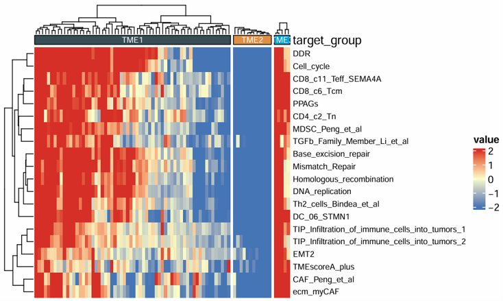
Download
- The heatmap can be exported from the Download panel.
- An initial plot size is provided, which can be adjusted if needed.
- If needed, you can adjust the plot width and height before downloading to obtain a more suitable layout.
2.6.2 Box Plot
Create a customizable boxplot for one selected numeric signature or variable across sample groups. The module supports optional scaling, custom colors, jittered points, and P-value display for group comparisons.
Example input
ID cluster CD_8_T_effector DDR APM Immune_Checkpoint CellCycle_Reg
1 TCGA-2F-A9KO TME1 4.7093 -4.3653 3.1724 4.5259 -1.3468
2 TCGA-2F-A9KP TME2 -1.6480 5.0614 -1.3928 -1.4447 3.2313
3 TCGA-2F-A9KQ TME2 -2.1915 -11.1568 -1.8568 -1.7691 0.6771
4 TCGA-2F-A9KR TME3 0.0528 3.2845 1.6877 -0.2206 -1.3867
5 TCGA-2F-A9KT TME1 -0.9226 7.1762 -1.6106 -1.0915 -1.1749Parameters
- Groups (
variable) — the categorical grouping column used on the x-axis- Example: subtype, response group, treatment group, or stage
- Signature (
signature) — the numeric variable displayed on the y-axis- Example: signature score, immune infiltration estimate, or pathway score
- Scale (
scale) — whether to scale the selected signature before plottingTrueFalse
- Palette (
palette) — preset color palette for group displaynrcjamaaaasjcopaired1paired2paired3paired4accentset2
- Colors (
cols) — custom group colors- Enter color names or hex codes separated by commas
- If provided, this setting overrides Palette
- Show Jitter (
jitter) — whether to display sample points on top of boxplotsTrueFalse
- Show Pairwise P-value (
show_pairwise_p) — whether to display pairwise comparison P valuesTrueFalse
- Show Overall P-value (
show_overall_p) — whether to display the overall group comparison P valueTrueFalse
- P-value Size (
size_of_pvalue) — font size of displayed P values- Example:
6
- Example:
- Point Size (
point_size) — size of jittered sample points- Example:
5
- Example:
- Font Size (
size_of_font) — font size of plot text- Example:
10
- Example:
- X-axis Text Angle (
angle_x_text) — rotation angle of x-axis labels- Example:
0
- Example:
- X-axis Text Justification (
hjust) — horizontal justification of rotated x-axis labels- Example:
0.5
- Example:
Steps
- Upload a dataset containing one grouping column and one or more numeric variables.
- Select the Groups column.
- Select the Signature column.
- Choose whether to apply Scale.
- Select a preset Palette or provide custom colors in Colors.
- Choose whether to show jitter points and P values.
- Adjust point size, font size, and x-axis label settings if needed.
- Click Run Analysis.
- View the boxplot in the Plot tab.
Example output
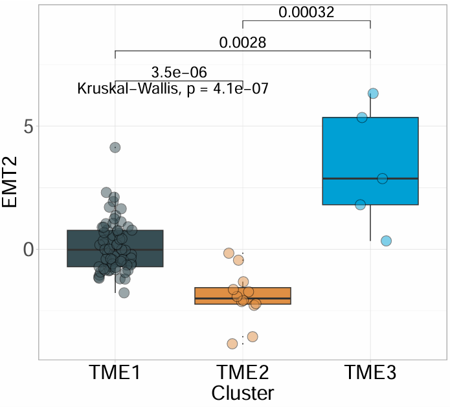
Download
- The heatmap can be exported from the Download panel.
- An initial plot size is provided, which can be adjusted if needed.
- If needed, you can adjust the plot width and height before downloading to obtain a more suitable layout.
2.6.3 Percentage Bar Plot
Plot a percentage bar chart for two categorical variables. The module summarizes the distribution of one category within another, supports custom colors, optional frequency labels, summary annotations, and coordinate flipping, and is suitable for comparing proportions across groups.
Example input
ID Subtype Lauren MSI EBV Hpylori
1 TCGA-3M-AB46 GS Mixed 0 0 0
2 TCGA-3M-AB47 CIN Mixed 0 0 0
3 TCGA-B7-5818 EBV Diffuse 0 1 0
4 TCGA-B7-A5TI MSI Diffuse 1 0 0
5 TCGA-BR-4187 GS Mixed 0 0 0Parameters
X Variable (
x) — the categorical variable displayed on the x-axis- Example: subtype, stage, response group, or molecular class
Y Variable (
y) — the categorical variable used for stacked proportion display- Example: Lauren type, MSI status, EBV status, or sex
Palette (
palette) — preset color palette for category displaynrcjamaaaasjcopaired1paired2paired3paired4accentset2
Colors (
color) — custom colors for categories- Enter color names or hex codes separated by commas
- If provided, this setting overrides Palette
Title (
title) — optional plot titleAxis Angle (
axis_angle) — rotation angle of x-axis labels- Example:
0
- Example:
Coord Flip (
coord_flip) — whether to flip the plot coordinatesTrueFalse
Add Frequency (
add_Freq) — whether to display percentage or frequency labels on the barsTrueFalse
Freq Font Size (
size_freq) — font size of frequency labels- Example:
8
- Example:
Legend Text Size (
legend.size.text) — font size of legend labels- Example:
10
- Example:
Add Summary (
add_sum) — whether to add summary annotations for each barTrueFalse
Steps
- Upload a dataset containing categorical annotation variables.
- Select the X Variable.
- Select the Y Variable.
- Choose a preset Palette or provide custom colors in Colors.
- Optionally enter a plot Title.
- Adjust axis angle, coordinate direction, label size, and legend size if needed.
- Choose whether to show frequency labels and summary annotations.
- Click Run Analysis.
- View the percentage bar plot in the Plot tab.
Example output
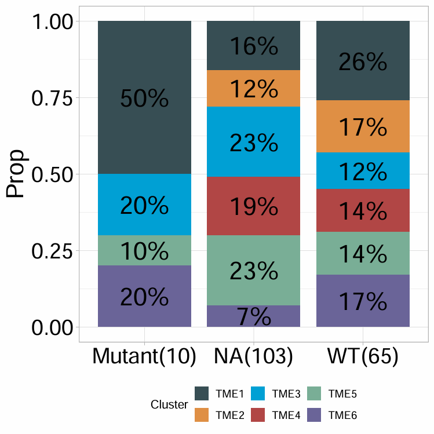
Download
- The plot can be exported from the Download panel.
- An initial plot size is provided, which can be adjusted if needed.
- If needed, you can adjust the plot width and height before downloading to obtain a more suitable layout.
2.6.4 Cell Bar Plot
Visualize cell composition or immune infiltration profiles across samples using a stacked bar plot. The module is suitable for deconvolution results such as CIBERSORT, EPIC, and quanTIseq, and supports custom colors, sample number control, legend position, and coordinate flipping.
Example input
ID B_cells_naive T_cells_CD8 NK_cells_resting Macrophages_M0 Macrophages_M2 Fibroblasts
1 TCGA-3M-AB46 0.0264 0.0290 0.0455 0.2464 0.1099 -0.3167
2 TCGA-3M-AB47 0.1680 0.0617 0.0601 0.0357 0.1241 1.1450
3 TCGA-B7-5818 0.0380 0.1248 0.0321 0.1035 0.2062 -0.0338
4 TCGA-B7-A5TI 0.1163 0.0653 0.0504 0.0978 0.2043 0.6185
5 TCGA-BR-4187 0.0641 0.0515 0.0530 0.0000 0.2551 1.8778Parameters
- ID column (
id) — the sample identifier column- Example:
ID
- Example:
- Features (
features) — one or more cell-fraction or infiltration-related columns to display- These usually include deconvolution-derived cell fractions or abundance estimates
- Sample Number (
n) — number of samples displayed in the plot- Example:
10
- Example:
- Colors (
cols) — custom colors for cell types- Enter color names or hex codes separated by commas
- Title (
title) — plot title- Default example:
Cell Fraction
- Default example:
- Legend Position (
legend.position) — position of the legendbottomtopleftright
- Palette (
palette) — preset palette index1234
- Coord Flip (
coord_filp) — whether to flip the plot orientationTrueFalse
Steps
- Upload a deconvolution result matrix or other cell-composition dataset.
- Enter the sample ID column name.
- Select one or more infiltration Features.
- Set the Sample Number to control how many samples are displayed.
- Optionally provide custom Colors.
- Enter a plot Title if needed.
- Select Legend Position, Palette, and whether to enable Coord Flip.
- Click Run Analysis.
- View the stacked bar plot in the Plot tab.
Example output
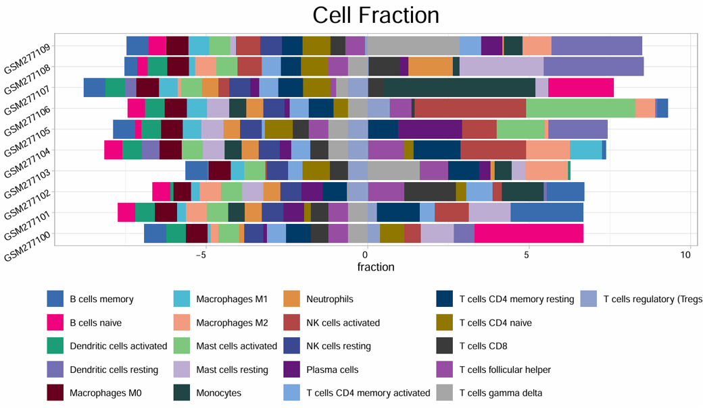
Download
- The plot can be exported from the Download panel.
- An initial plot size is provided, which can be adjusted if needed.
- If needed, you can adjust the plot width and height before downloading to obtain a more suitable layout.
2.6.5 Forest Plot
Produce a forest plot from batch survival analysis results. The module visualizes hazard ratios, confidence intervals, and P values for selected signatures or variables, and is suitable for summarizing survival-associated features.
Example input
ID P HR lower_0.95 upper_0.95
1 TMEscore_plus 0.0031 1.8425 1.2254 2.7710
2 StromalScore 0.0184 1.5362 1.0738 2.1980
3 ImmuneScore 0.0412 0.7124 0.5148 0.9858
4 ESTIMATEScore 0.0097 1.6841 1.1296 2.5110
5 CD8_T_cells 0.0275 0.6483 0.4412 0.9527Parameters
- Signature (
signature) — the column containing signature or feature names- Example:
ID
- Example:
- P-value (
pvalue) — the column containing P values- Example:
P
- Example:
- HR (
HR) — the column containing hazard ratios- Example:
HR
- Example:
- Lower CI (95%) (
CI_low_0.95) — the column containing the lower bound of the 95% confidence interval- Example:
lower_0.95
- Example:
- Upper CI (95%) (
CI_up_0.95) — the column containing the upper bound of the 95% confidence interval- Example:
upper_0.95
- Example:
- Signature Number (
n) — the number of top signatures or variables to display- Example:
10
- Example:
- Text Size (
text.size) — font size used in the forest plot- Example:
13
- Example:
- Colors (
cols) — custom colors for forest plot elements- Enter at least 2 color names or hex codes separated by commas
Steps
- Upload a batch survival result table.
- Enter the column name for Signature.
- Enter the column names for P-value, HR, Lower CI (95%), and Upper CI (95%).
- Set the Signature Number to control how many results are displayed.
- Adjust Text Size if needed.
- Optionally provide custom Colors.
- Click Run Analysis.
- View the forest plot in the Plot tab.
Example output
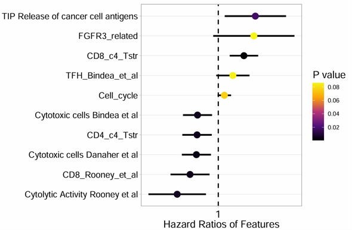
Download
- The plot can be exported from the Download panel.
- An initial plot size is provided, which can be adjusted if needed.
- If needed, you can adjust the plot width and height before downloading to obtain a more suitable layout.
2.6.6 Correlation Plot
Compute and visualize the correlation between two variables with optional subtype grouping and regression display. The module supports Pearson, Spearman, and Kendall correlation methods, and can generate a scatter plot with fitted line and correlation statistics.
Example input
ID cluster CD_8_T_effector DDR APM Immune_Checkpoint CellCycle_Reg
1 TCGA-2F-A9KO TME1 4.7093 -4.3653 3.1724 4.5259 -1.3468
2 TCGA-2F-A9KP TME2 -1.6480 5.0614 -1.3928 -1.4447 3.2313
3 TCGA-2F-A9KQ TME2 -2.1915 -11.1568 -1.8568 -1.7691 0.6771
4 TCGA-2F-A9KR TME3 0.0528 3.2845 1.6877 -0.2206 -1.3867
5 TCGA-2F-A9KT TME1 -0.9226 7.1762 -1.6106 -1.0915 -1.1749Parameters
Matrix (
is.matrix) — whether the input is treated as a pure matrixTrueFalse
Variable 1 (
var1) — the first numeric variable used in the correlation analysisVariable 2 (
var2) — the second numeric variable used in the correlation analysisSubtype (
subtype) — optional grouping variable used to color points by category- Example: subtype, response group, or treatment group
Scale (
scale) — whether to scale the selected variables before analysisTrueFalse
Method (
method) — correlation methodPearsonSpearmanKendall
Show Result (
show_cor_result) — whether to display correlation statistics on the plotTrueFalse
Color Line(optional) (
col_line) — color of the fitted regression line- Example:
blackor#E69F00
- Example:
Subtype Colors (
color_subtype) — custom colors for subtype groups- Enter color names or hex codes separated by commas
Title(optional) (
title) — plot titleTitle Size(optional) (
title_size) — plot title size- Example:
1.5
- Example:
Point Size (
point_size) — size of scatter points- Example:
4
- Example:
Point Transparency (
alpha) — transparency of scatter points- Example:
0.5
- Example:
Text Size (
text_size) — size of plot text- Example:
10
- Example:
Axis Label Angle (
axis_angle) — rotation angle of axis labels- Example:
0
- Example:
Hjust (
hjust) — horizontal justification of rotated labels- Example:
0
- Example:
Steps
- Upload a dataset containing numeric variables for correlation analysis.
- Choose whether the input should be treated as a Matrix.
- Select Variable 1 and Variable 2.
- Optionally select a Subtype column for grouped coloring.
- Choose whether to apply Scale.
- Select the correlation Method.
- Choose whether to show correlation statistics on the plot.
- Optionally set the regression line color, subtype colors, and plot title.
- Adjust point size, transparency, text size, and axis label settings if needed.
- Click Run Analysis.
- View the scatter plot in the Plot tab.
Example output
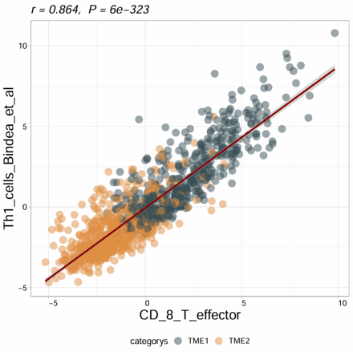
Download
- The plot can be exported from the Download panel.
- An initial plot size is provided, which can be adjusted if needed.
- If needed, you can adjust the plot width and height before downloading to obtain a more suitable layout.
2.6.7 Correlation Matrix
Calculate and visualize a correlation matrix between two selected feature sets. The module supports Pearson, Spearman, and Kendall correlation methods, optional scaling, custom heatmap colors, significance annotation, and correlation-based filling.
Example input
ID cluster CD_8_T_effector DDR APM Immune_Checkpoint CellCycle_Reg
1 TCGA-2F-A9KO TME1 4.7093 -4.3653 3.1724 4.5259 -1.3468
2 TCGA-2F-A9KP TME2 -1.6480 5.0614 -1.3928 -1.4447 3.2313
3 TCGA-2F-A9KQ TME2 -2.1915 -11.1568 -1.8568 -1.7691 0.6771
4 TCGA-2F-A9KR TME3 0.0528 3.2845 1.6877 -0.2206 -1.3867
5 TCGA-2F-A9KT TME1 -0.9226 7.1762 -1.6106 -1.0915 -1.1749Parameters
- Matrix (
is.matrix) — whether the input is treated as a pure matrixTrueFalse
- Features Set1 (
feas1) — the first group of variables used in the correlation matrix- One or more numeric variables
- Features Set2 (
feas2) — the second group of variables used in the correlation matrix- One or more numeric variables
- Heatmap Colors (
cols) — colors used for the correlation heatmap- Provide 2 or 3 colors separated by commas
2colors: low/high, with white used as the midpoint3colors: low/mid/high
- Scale (
scale) — whether to scale variables before correlation analysisTrueFalse
- Method (
method) — correlation methodPearsonSpearmanKendall
- Font Size Star (
font.size.star) — font size of significance markers- Example:
8
- Example:
- Font Size (
font.size) — overall font size of the matrix plot- Example:
15
- Example:
- Fill by cor (
fill_by_cor) — whether to fill tiles directly by correlation valuesTrueFalse
Steps
- Upload a dataset containing numeric variables for correlation analysis.
- Choose whether the input should be treated as a Matrix.
- Select one or more variables for Features Set1.
- Select one or more variables for Features Set2.
- Optionally provide custom Heatmap Colors.
- Choose whether to apply Scale.
- Select the correlation Method.
- Adjust font size settings if needed.
- Choose whether to enable Fill by cor.
- Click Run Analysis.
- View the correlation matrix in the Plot tab.
Example output
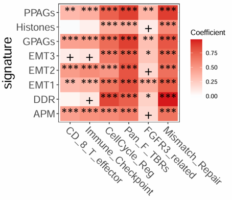
Download
- The plot can be exported from the Download panel.
- An initial plot size is provided, which can be adjusted if needed.
- If needed, you can adjust the plot width and height before downloading to obtain a more suitable layout.
2.6.8 Survival Plots
Generate Kaplan–Meier survival plots for one selected signature or numeric variable. The module automatically creates multiple survival grouping strategies, including best cutoff, two-group comparison, and three-group comparison, and combines them into one figure.
Example input
ID OS_time OS_status TMEscore_plus StromalScore ImmuneScore
1 TCGA-3M-AB46 58.83 0 -1.2456 -0.6766 -1.3235
2 TCGA-3M-AB47 12.40 1 0.8452 0.9613 0.0518
3 TCGA-B7-5818 11.87 0 0.1264 -0.2425 0.8001
4 TCGA-B7-A5TI 19.83 0 0.4028 0.4017 -0.4095
5 TCGA-BR-4187 4.70 1 1.7631 2.2367 1.2632Parameters
- Signature (
signature) — the numeric variable used for survival stratification- Example: signature score, pathway score, or immune-related feature
- Status (
status) — the event indicator column used in survival analysis- Example:
OS_status
- Example:
- Time (
time) — the survival time column- Example:
OS_time
- Example:
- ID (
ID) — the sample identifier column- Default example:
ID
- Default example:
- Time Type (
time_type) — the time unit of the survival columnMonthDay
- Palette (
palette) — preset color palette for survival groupsnrcjamaaaasjcopaired1paired2paired3paired4accentset2
- Colors (
cols) — custom colors for survival groups- Enter color names or hex codes separated by commas
- If provided, this setting overrides Palette
Steps
- Upload a dataset containing survival information and one or more numeric signatures.
- Select the Signature column.
- Select the survival Status column.
- Select the survival Time column.
- Enter the sample ID column name if needed.
- Choose the correct Time Type.
- Select a preset Palette or provide custom Colors.
- Click Run Analysis.
- View the combined Kaplan–Meier plots in the Plot tab.
Example output
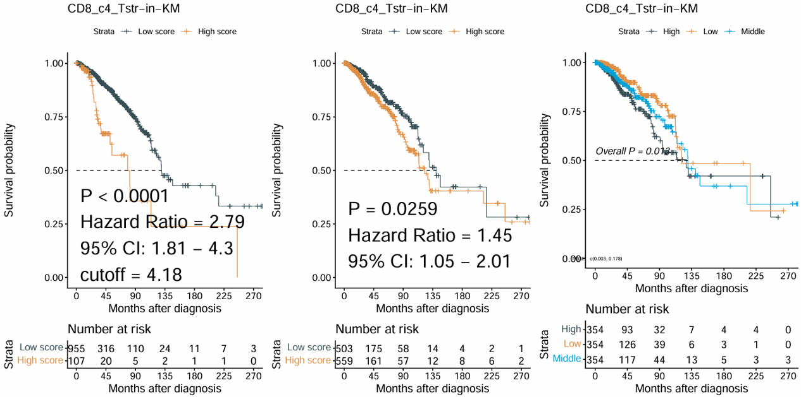
Download
- The plot can be exported from the Download panel.
- An initial plot size is provided, which can be adjusted if needed.
- If needed, you can adjust the plot width and height before downloading to obtain a more suitable layout.
2.6.10 Surv_group
Generate Kaplan–Meier survival plots for a categorical grouping variable. The module compares survival outcomes across predefined groups and is suitable for subgroup-based survival analysis such as molecular subtype, treatment class, or clinical category.
Example input
ID Subtype OS_time OS_status
1 TCGA-3M-AB46 GS 58.83 0
2 TCGA-3M-AB47 CIN 12.40 1
3 TCGA-B7-5818 EBV 11.87 0
4 TCGA-B7-A5TI MSI 19.83 0
5 TCGA-BR-4187 GS 4.70 1Parameters
- ID column (
ID) — the sample identifier column- Default example:
ID
- Default example:
- Target Group (
target_group) — the categorical grouping variable used for Kaplan–Meier comparison- Example: subtype, response group, treatment group, or stage
- Status (
status) — the event indicator column used in survival analysis- Example:
OS_status
- Example:
- Time (
time) — the survival time column- Example:
OS_time
- Example:
- Time Type (
time_type) — the time unit of the survival columnMonthsDays
- Palette (
palette) — preset color palette for survival groupsnrcaaasjcojamapaired1paired2paired3paired4accentset2
- Colors (
cols) — custom colors for survival groups- Enter color names or hex codes separated by commas
- If provided, this setting overrides Palette
- Font Size (Table) (
font.size.table) — font size of the risk table- Example:
5
- Example:
Steps
- Upload a dataset containing one grouping column and survival information.
- Enter the sample ID column name if needed.
- Select the Target Group column.
- Select the survival Status column.
- Select the survival Time column.
- Choose the correct Time Type.
- Select a preset Palette or provide custom Colors.
- Adjust Font Size (Table) if needed.
- Click Run Analysis.
- View the Kaplan–Meier plot in the Plot tab.
Example output
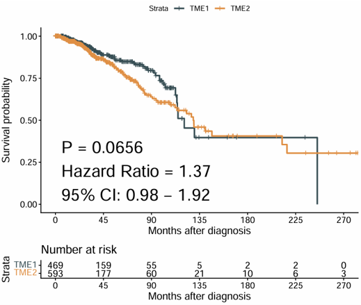
Download
- The plot can be exported from the Download panel.
- An initial plot size is provided, which can be adjusted if needed.
- If needed, you can adjust the plot width and height before downloading to obtain a more suitable layout.
2.6.11 Time ROC Curves
Generate time-dependent ROC curves with AUC values for one to three selected variables. The module is suitable for evaluating and comparing the prognostic performance of signatures, scores, or biomarkers at a specific survival time point.
Example input
ID OS_time OS_status TMEscore_plus StromalScore ImmuneScore
1 TCGA-3M-AB46 58.83 0 -1.2456 -0.6766 -1.3235
2 TCGA-3M-AB47 12.40 1 0.8452 0.9613 0.0518
3 TCGA-B7-5818 11.87 0 0.1264 -0.2425 0.8001
4 TCGA-B7-A5TI 19.83 0 0.4028 0.4017 -0.4095
5 TCGA-BR-4187 4.70 1 1.7631 2.2367 1.2632Parameters
- Variables (Max 3) (
vars) — one to three numeric variables used to build time-dependent ROC curves- Example: signature scores, pathway scores, or biomarkers
- Status (
status) — the event indicator column used in survival analysis- Example:
OS_status
- Example:
- Time (
time) — the survival time column- Example:
OS_time
- Example:
- Time Point (
time_point) — the survival time point used for ROC evaluation- Example:
12
- Example:
- Time Type (
time_type) — the time unit of the survival columnMonthDay
- Palette (
palette) — preset color palette for ROC curvesnrcjamaaaasjcopaired1paired2paired3paired4accentset2
- Colors (
cols) — custom colors for ROC curves- Enter color names or hex codes separated by commas
- If provided, this setting overrides Palette
- Title (
main) — optional plot title
Steps
- Upload a dataset containing survival information and one or more numeric variables.
- Select one to three Variables.
- Select the survival Status column.
- Select the survival Time column.
- Set the Time Point for ROC evaluation.
- Choose the correct Time Type.
- Select a preset Palette or provide custom Colors.
- Optionally enter a plot Title.
- Click Run Analysis.
- View the time-dependent ROC plot in the Plot tab.
Example output
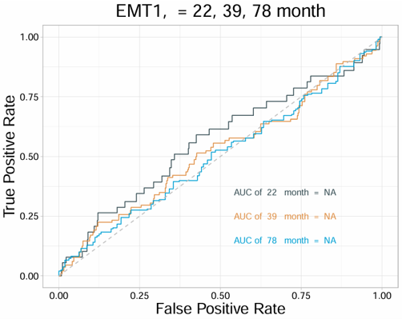
Download
- The plot can be exported from the Download panel.
- An initial plot size is provided, which can be adjusted if needed.
- If needed, you can adjust the plot width and height before downloading to obtain a more suitable layout.
2.6.12 Signature ROC Curves
Generate ROC curves for one or more selected variables against a binary outcome. The module supports multiple ROC curves in one plot, optional curve comparison, smoothing, custom colors, and transparency adjustment.
Example input
ID OS_status cluster CD_8_T_effector DDR APM Immune_Checkpoint
1 TCGA-2F-A9KO 0 TME1 4.7093 -4.3653 3.1724 4.5259
2 TCGA-2F-A9KP 1 TME2 -1.6480 5.0614 -1.3928 -1.4447
3 TCGA-2F-A9KQ 1 TME2 -2.1915 -11.1568 -1.8568 -1.7691
4 TCGA-2F-A9KR 0 TME3 0.0528 3.2845 1.6877 -0.2206
5 TCGA-2F-A9KT 0 TME1 -0.9226 7.1762 -1.6106 -1.0915Parameters
- Status (
response) — the binary outcome column used for ROC analysis- Example:
OS_status
- Example:
- Variables (
variables) — one or more numeric variables used to generate ROC curves- Example: signature scores, pathway scores, or biomarkers
- Palette (
palette) — preset color palette for ROC curvesnrcjamaaaasjcopaired1paired2paired3paired4accentset2
- Colors (
cols) — custom colors for ROC curves- Enter color names or hex codes separated by commas
- If provided, this setting overrides Palette
- Transparency (
alpha) — line transparency of ROC curves- Example:
1
- Example:
- Compare (
compare) — whether to compare ROC curves statisticallyTrueFalse
- Compare Method (
compare_method) — statistical method used for ROC comparisonBootstrapDelongVenkatraman
- Smooth (
smooth) — whether to smooth ROC curvesTrueFalse
- Title (
main) — optional plot title
Steps
- Upload a dataset containing one binary outcome column and one or more numeric variables.
- Select the Status column.
- Select one or more Variables.
- Choose a preset Palette or provide custom Colors.
- Adjust Transparency if needed.
- Choose whether to enable Compare.
- If comparison is enabled, select the Compare Method.
- Choose whether to apply Smooth.
- Optionally enter a plot Title.
- Click Run Analysis.
- View the ROC plot in the Plot tab.
Example output
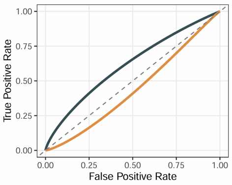
Download
- The plot can be exported from the Download panel.
- An initial plot size is provided, which can be adjusted if needed.
- If needed, you can adjust the plot width and height before downloading to obtain a more suitable layout.
2.6.13 PCA Visualization
Perform Principal Component Analysis (PCA) on an expression matrix and optionally color samples by group information from a phenotype table. The module supports matrix scaling, log transformation, sample labels, group colors, ellipse display, and flexible axis selection.
Example input
Expression matrix
TCGA-3M-AB46 TCGA-3M-AB47 TCGA-B7-5818 TCGA-B7-A5TI
EPCAM 5.238 4.992 5.641 5.310
CD8A 8.421 7.952 6.884 8.103
GZMB 7.116 6.208 5.774 6.945
COL1A1 9.114 8.773 9.562 9.028Phenotype data
ID Subtype Response
1 TCGA-3M-AB46 GS Non-response
2 TCGA-3M-AB47 CIN Response
3 TCGA-B7-5818 EBV Response
4 TCGA-B7-A5TI MSI Non-responseParameters
- ID Column (Pdata) (
id_pdata) — the sample ID column in the phenotype table- Example:
ID
- Example:
- Group (Pdata) (
group) — the grouping variable in the phenotype table used to color samples- Example: subtype, response group, or treatment group
- Matrix (
is.matrix) — whether the uploaded expression data is treated as a pure matrixTrueFalse
- Scale (
scale) — whether to scale variables before PCATrueFalse
- Log (
is.log) — whether the matrix is already log-transformed or should be treated as log-scale inputTrueFalse
- Sample Display (
geom.ind) — how samples are shown in the PCA plotPointTextBoth
- Palette (
palette) — preset color palette for sample groupsnrcjamaaaasjcopaired1paired2paired3paired4accentset2
- Colors (
cols) — custom colors for sample groups- Enter color names or hex codes separated by commas
- If provided, this setting overrides Palette
- Repel Labels (
repel) — whether to repel overlapping sample labelsTrueFalse
- Components Number (
ncp) — number of principal components to calculate- Example:
5
- Example:
- X-axis (
axes[1]) — principal component displayed on the x-axis- Example:
1
- Example:
- Y-axis (
axes[2]) — principal component displayed on the y-axis- Example:
2
- Example:
- Add Ellipses (
addEllipses) — whether to add group ellipses to the PCA plotTrueFalse
Steps
- Upload an expression matrix.
- Upload a phenotype table if group annotation is needed.
- Enter the sample ID Column (Pdata).
- Select the Group (Pdata) column.
- Choose whether the expression input is a Matrix.
- Set Scale and Log options as needed.
- Select the Sample Display mode.
- Choose a preset Palette or provide custom Colors.
- Adjust label repelling, component number, PCA axes, and ellipse display if needed.
- Click Run Analysis.
- View the PCA plot in the Plot tab.
Example output
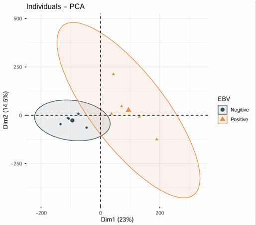
Download
- The plot can be exported from the Download panel.
- An initial plot size is provided, which can be adjusted if needed.
- If needed, you can adjust the plot width and height before downloading to obtain a more suitable layout.
2.6.14 Signature GSEA
Perform Gene Set Enrichment Analysis (GSEA) based on differential expression results generated from an expression matrix and phenotype data. The module first runs differential expression analysis between two selected groups, then performs GSEA using a selected signature collection and displays the top enriched signatures.
Example input
Expression matrix
TCGA-BR-6455 TCGA-BR-7196 TCGA-BR-8371 TCGA-BR-8380
ENSG00000000003 8006 2114 767 1556
ENSG00000000005 1 0 5 5
ENSG00000000419 3831 2600 1729 1760
ENSG00000000457 1126 745 1040 1260Phenotype data
ID Subtype
1 TCGA-3M-AB46 GS
2 TCGA-3M-AB47 CIN
3 TCGA-B7-5818 EBV
4 TCGA-B7-A5TI MSIParameters
- ID (Pdata) (
pdata_id) — the sample ID column in the phenotype table- Example:
ID
- Example:
- Group (
group_id) — the grouping column used for differential expression- Example: tumor vs normal, responder vs non-responder
- Contrast (Case vs Control) (
contrast)- Case: the experimental group
- Control: the reference group
- Array (
array) — whether the expression data is from microarrayTrueFalse
- Method (
method) — differential expression methodDESeq2: suitable for raw count dataLimma: suitable for log-transformed expression data such as log2 TPM
- Padj Cutoff (
padj_cutoff) — adjusted P-value threshold for differential expression filtering- Example:
0.01
- Example:
- Logfc Cutoff (
logfc_cutoff) — log fold-change threshold for differential expression filtering- Example:
0.5
- Example:
- Palette (
palette_gsea) — preset color palette for the GSEA plot1234
- Colors (
cols_gsea) — custom colors for the GSEA plot- Enter color names or hex codes separated by commas
- Signature (
genesets) — the gene set collection used for enrichment analysisTMEMetabolismTumorCollectionGo_bpGo_ccGo_mfKEGGHallmarkReactome
- Signature Numbers (
show_gsea) — number of top enriched signatures displayed in the plot- Example:
8
- Example:
Steps
- Upload the expression matrix.
- Upload the phenotype table.
- Enter the sample ID (Pdata) column name.
- Select the Group column.
- Select the Case and Control groups for comparison.
- Choose Array and Method according to the input data type.
- Set Padj Cutoff and Logfc Cutoff.
- Click the first Run Analysis button to perform differential expression and GSEA.
- Select the GSEA Palette, custom Colors, Signature collection, and Signature Numbers if needed.
- Click the second Run Analysis button to update the GSEA plot only.
- View the differential expression result in the Data tab.
- View the GSEA plot in the Plot tab.
Example output
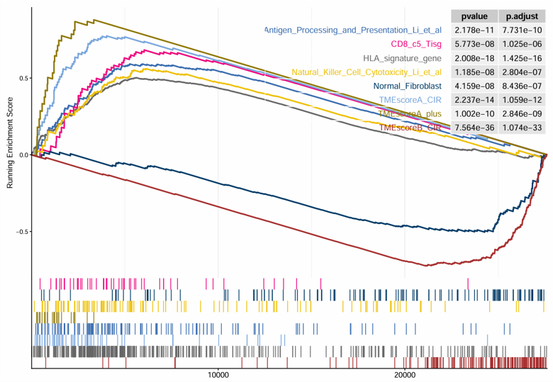
Download
- The result plot can be exported from the Download panel.
- An initial plot size is provided, which can be adjusted if needed.
- If needed, you can adjust the plot width and height before downloading to obtain a more suitable layout.
2.6.15 Find Markers
Identify marker genes for each group from bulk transcriptome data using a Seurat-based workflow. The module takes an expression matrix and phenotype data, detects group-specific marker genes, displays a heatmap of top markers, and returns the complete marker table.
Example input
TCGA-3M-AB46 TCGA-3M-AB47 TCGA-B7-5818 TCGA-B7-A5TI
EPCAM 5.238 4.992 5.641 5.310
CD8A 8.421 7.952 6.884 8.103
GZMB 7.116 6.208 5.774 6.945
COL1A1 9.114 8.773 9.562 9.028Phenotype data
ID Subtype
1 TCGA-3M-AB46 GS
2 TCGA-3M-AB47 CIN
3 TCGA-B7-5818 EBV
4 TCGA-B7-A5TI MSIParameters
- Pdata ID (
id_pdata) — the sample ID column in the phenotype table- Example:
ID
- Example:
- Group Column (
group) — the grouping variable used to identify marker genes- Example: subtype, response group, or treatment group
- Top N Markers (
top_n) — number of top marker genes displayed per group in the heatmap- Example:
20
- Example:
- Group Color (
group_color_style) — preset color palette for group annotationsnpgaaaslancetset1set2paired
- Heatmap Color (
heatmap_body_color) — preset color palette for heatmap expression valuesRed-White-BlueYellow-Black-PurpleRed-Black-GreenSpectra
- Custom Group Colors (
group.colors) — custom colors for group annotations- Enter color names or hex codes separated by commas
- If provided, this setting overrides Group Color
- Custom Heatmap Colors (
heatmap.colors) — custom colors for the heatmap body- Enter at least 2 color names or hex codes separated by commas
- If provided, this setting overrides Heatmap Color
Steps
- Upload the expression matrix.
- Upload the phenotype table.
- Enter the sample Pdata ID column name.
- Select the Group Column.
- Set the Top N Markers to display in the heatmap.
- Select a preset Group Color and Heatmap Color, or provide custom colors.
- Click Run Analysis.
- View the marker heatmap in the Plot tab.
- View the complete marker table in the Marker Table tab.
Example output
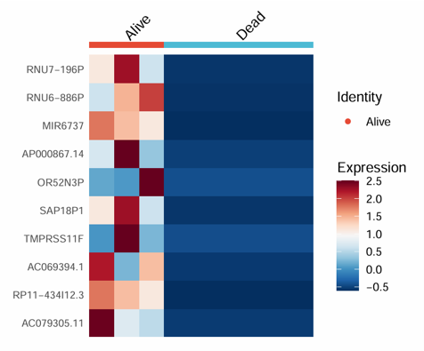
Download
- The result plot and marker table can be exported from the Download panel.
- An initial plot size is provided, which can be adjusted if needed.
- If needed, you can adjust the plot width and height before downloading to obtain a more suitable layout.
Download
- Results can be exported from the Download panel.
2.7 Mutation Module
2.7.1 Build Mutation Matrix
Convert MAF mutation data into a binary mutation matrix. The module summarizes mutation events at the gene level and returns a sample-by-gene matrix indicating whether each gene is mutated in each sample.
Example input
Mutation Annotation Format (MAF) table
Hugo_Symbol Tumor_Sample_Barcode Variant_Classification
1 TP53 TCGA-3M-AB46 Missense_Mutation
2 ARID1A TCGA-3M-AB46 Frame_Shift_Del
3 PIK3CA TCGA-3M-AB47 Missense_Mutation
4 CDH1 TCGA-B7-5818 Nonsense_Mutation
5 FAT4 TCGA-B7-A5TI Frame_Shift_InsParameters
- TCGA (
isTCGA) — whether the uploaded MAF file uses TCGA-style sample identifiersTrueFalse
- Type to show and download (
table_type) — mutation category displayed in the result tableAllSNPINDELFrameshift
Steps
- Upload a MAF mutation file.
- Select whether the file uses TCGA sample IDs.
- Choose the mutation Type to show and download.
- Click Run Analysis.
- View the binary mutation matrix in the Data tab.
Example output
TCGA-3M-AB46 TCGA-3M-AB47 TCGA-B7-5818 TCGA-B7-A5TI
TP53 1 0 0 0
ARID1A 1 0 0 0
PIK3CA 0 1 0 0
CDH1 0 0 1 0
FAT4 0 0 0 1Download
- Results can be exported from the Download panel.
2.7.2 Identify Mutations
Identify phenotype-associated mutations by combining a binary mutation matrix with a signature matrix. The module tests whether mutations in specific genes are associated with the selected signature, and generates both an oncoprint and a box plot for visualization.
Example input
Mutation matrix
TCGA-3M-AB46 TCGA-3M-AB47 TCGA-B7-5818 TCGA-B7-A5TI
TP53 1 0 0 0
ARID1A 1 0 0 0
PIK3CA 0 1 0 0
CDH1 0 0 1 0
FAT4 0 0 0 1Signature matrix
ID TMEscore_plus StromalScore ImmuneScore
1 TCGA-3M-AB46 -1.2456 -0.6766 -1.3235
2 TCGA-3M-AB47 0.8452 0.9613 0.0518
3 TCGA-B7-5818 0.1264 -0.2425 0.8001
4 TCGA-B7-A5TI 0.4028 0.4017 -0.4095Parameters
- ID Column (
id_signature_matrix) — the sample ID column in the signature matrix- Example:
ID
- Example:
- Signature (
signature) — the numeric signature used to test mutation-associated differences- Example:
TMEscore_plus
- Example:
- Min Mutation Frequency (
min_mut_freq) — minimum mutation frequency threshold for genes included in the analysis0.010.050.1
- Method (
method) — statistical method used to identify phenotype-associated mutationsMulti(Cuzick and Wilcoxon)Wilcoxon
Parameters for oncoprint
- Group By (
oncoprint_group_by) — grouping method used for oncoprint displayMeanQuantile
- Gene Counts (
gene_counts) — number of top genes shown in the oncoprint- Example:
10
- Example:
Parameters for box plot
- Point Size (
point_size) — size of points displayed on the box plot- Example:
4.5
- Example:
- Point Transparency (
point_alpha) — transparency of points on the box plot- Example:
0.1
- Example:
- Show Jitter (
jitter) — whether to display jittered sample pointsTrueFalse
Parameters for all results download
- Output Folder Name (
save_path) — folder name used when packaging all generated results- Example:
mutation_results
- Example:
Steps
- Upload the binary mutation matrix.
- Upload the signature matrix.
- Enter the sample ID Column name for the signature matrix.
- Select the target Signature.
- Choose the Min Mutation Frequency threshold.
- Select the statistical Method.
- Adjust the oncoprint parameters if needed.
- Adjust the box plot parameters if needed.
- Click Run Analysis.
- View the mutation oncoprint in the Oncoprint tab.
- View the mutation-associated signature box plot in the Box Plot tab.
Example output
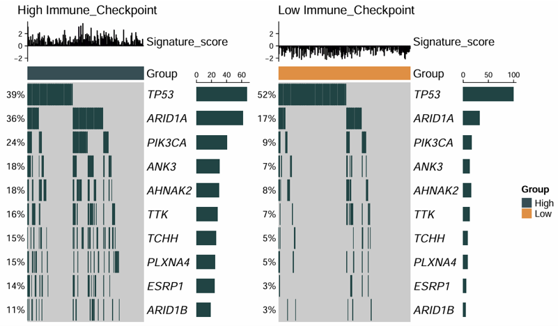
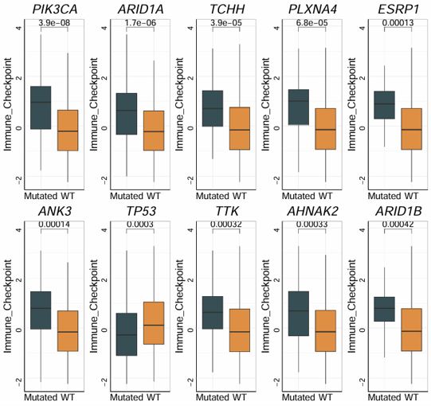
Download
- The oncoprint and box plot can be exported from their respective Download panels, and all generated results can also be packaged from the All Results Download panel.
- An initial plot size is provided, which can be adjusted if needed.
- If needed, you can adjust the plot width and height before downloading to obtain a more suitable layout.